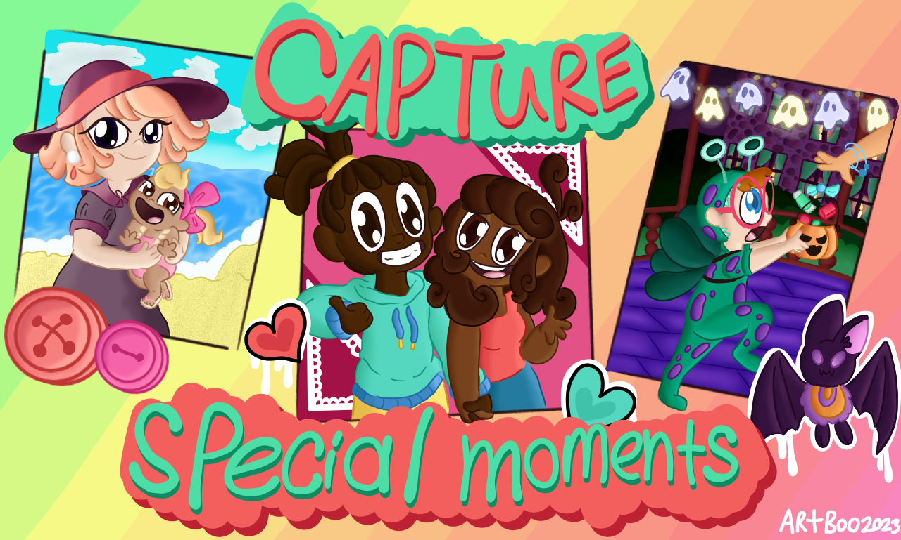
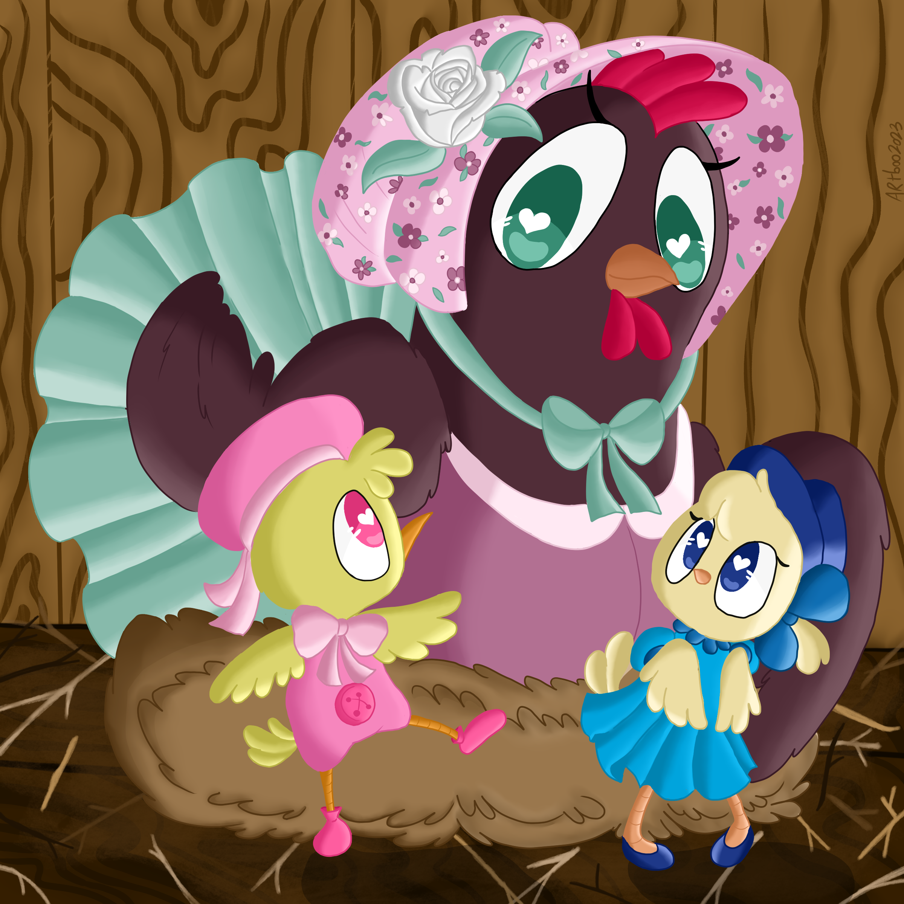
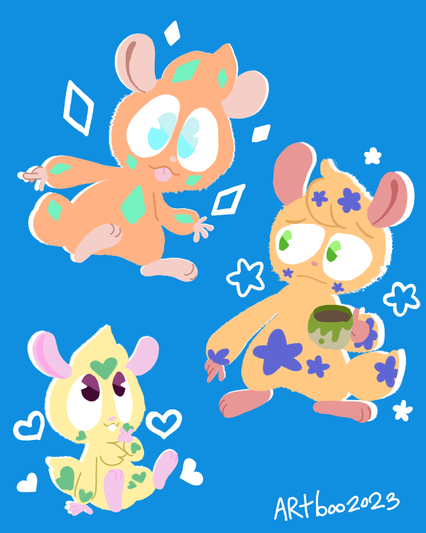

Arianna's Artwork





I have been able to draw since I have been able to write with a pencil. Though I have been drawing for a while, I have never really saved my earlier work. But regardless, here is some of my best work so far.